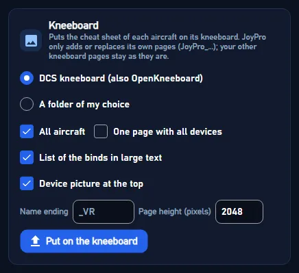

#Šī ierīce izmanto savu stilu
Izvēles rūtiņaaprakstītsDod parādītajai ierīcei savu stilu: tās špikera krāsas, fontu un marķierus.
Tas tiek glabāts kopā ar ierīces lapu un ceļo līdzi ar Kopīgot izkārtojumu....
Lapa Izkārtojums rāda katras jūsu ierīces attēlu ar to, ko dara katra poga, Hat slēdzis un ass. Tai ir divas sadaļas, ko pārslēdz augšā: Ierīču attēli (viena ierīce vienlaikus: skatīties, labot marķierus, piesaistīt attēlā) un Špikeri (izdrukājami visu jūsu ierīču attēli katram gaisa kuģim). Nekas šajā lapā nemaina spēli, izņemot piesaisti, ko izveidojat režīmā Piesaistīt, kas nonāk jūsu profilā kā jebkura cita piesaiste.


Kas kur atrodas? atver logu ar visām jūsu ierīcēm. Blakus katrai vadīklai ir rakstīts, ko tā dara jūsu spēlē. To atradīsiet šīs lapas augšējā labajā stūrī, lapā Sākums un sistēmas joslas izvēlnē.
Sekot spēlei pārslēdzas uz spēli, kuru spēlējat, un DCS uz gaisa kuģi, ar kuru lidojat. Vairāk: Kas kur atrodas? Redziet, ko dara katra poga.


JoyPro var uzlikt lapu ar jūsu piesaistēm uz katra DCS gaisa kuģa ceļgala planšetes. Jūs to izlasāt tieši kabīnē.
Nomainījāt pogu? Vēlreiz nospiediet Likt uz ceļgala planšetes: JoyPro aizstāj savas lapas. Jūsu citas ceļgala planšetes lapas paliek. Vairāk: Redzēt manas piesaistes uz DCS ceļgala planšetes.




Jūsu ierīču attēli ar katru piesaisti, kas uzrakstīta blakus pogām, lai izdrukātu vai turētu otrā ekrānā. Atzīmējiet ierīces, spēles un gaisa kuģus, izvēlieties Pārskats par ierīci un/vai Viens katram gaisa kuģim, nospiediet Izveidot špikerus. Attēli (PNG) nonāk izvades mapē; priekšskatījums tos parāda.


Špikeris rāda, ko pogas dara vienā gaisa kuģī, ar spēles pašas komandu nosaukumiem, kad to izvēlaties priekšskatījuma lodziņā. Piesaiste, kas izveidota režīmā Piesaistīt, tiek ierakstīta spēlē nākamajā eksportā, tāpat kā lapā Piesaistes ierakstīta piesaiste.
Attēlu joslā virs audekla ir poga katram ierīces attēlam. Lodziņš blakus 3D pogai izvēlas zīmējuma stilu: Līnijas vai vienkrāsainas krāsas zem treknām kontūrām (krāsas sadaļā Iestatījumi > Zīmējumi). Ierīcēm ar 3D modeli ir 3D skats: velciet, lai pagrieztu, ritenītis tuvina, dubultklikšķis atiestata. Plakanais zīmējums ir tas, ko izdrukā špikeri un ar ko strādā režīms Rediģēt.
JoyPro identificē ierīci pēc tās USB id, nosaukuma un ievadēm, ko tā ziņo, salīdzinot ar vairāku simtu modeļu katalogu. Ja tas nevar noteikt (pamatne ar maināmiem rokturiem, viens USB id vairākiem produktiem, nezināma ierīce), tas jautā virs attēla: Kura tā ir? ar kandidātu flīzēm, Visticamākais vispirms, Paturēt visticamāko, Nav sarakstā: meklēt katalogā, Ne tagad. Nezināmai ierīcei izvēlaties arī tās veidu. Modelis... > Izvēlēties citu modeli... jautā vēlreiz jebkurā laikā.
Ja parādītajā attēlā nav zināma kādas daļas pozīcija ("Šajā attēlā vēl nav pozīciju"), marķieru palīgs tās novieto vienas minūtes laikā:
Ja ierīce nav pie rokas, Tagad novietojiet: X nosauc nākamo ievadi; klikšķis to novieto tur, Vēlāk to pajautā pēc pārējām, un ievades bez vietas ir žetoni, kurus varat vilkt uz attēla. Atsaukt atceļ pēdējo novietojumu; Izlaist pāriet uz nākamo ievadi; Apturēt pauzē. Vairāk satur Ass, Apturēt, Pievienot vadības elementu (vadības elements, ko JoyPro nezina: poga, slēdzis, Hat slēdzis, mini stūrīte, enkoders, ass) un Noņemt no attēla.


Vairāk > Atrastās vietas (eksperimentāls) uzzīmē plānus svītrotus apļus uz fotogrāfijas vietām, kas izskatās pēc pogām, Hat slēdžiem vai slēdžiem. Klikšķis (vai nomests žetons) pie apļa novieto marķieri apļa centrā. JoyPro nezina, kura ievade ir vieta, tāpēc pats neko nenovieto; tas darbojas uz fotogrāfijām, nevis uz JoyPro zīmējumiem, un darbojas bezsaistē.
Attēlā ar zināmām pozīcijām Tabulas (rīkjosla) zīmē JoyPro 1 špikera izskatu: tabula katrai vadības elementu grupai ap attēlu, līnijas uz daļām, piesaistītā saite katrā rindā un modifikatora piesaiste otrajā kolonnā. Priekšskatījuma lodziņš izvēlas, ko rāda rindas: Saišu nosaukumi vai vienu spēli un gaisa kuģi ar šīs spēles pašas izvēlņu nosaukumiem. Režīmā Rediģēt varat vilkt tabulu (tā tiek piesprausta), tās labo malu, līnijas posmu vai vietu; sānu panelī ir Modifikatoru kolonna, Rinda + / Rinda −, Piesprausts, Pārvadīt līniju, Noņemt līniju, Sadalīt atsevišķās tabulās, Grupēt atkal, Automātiskā sakārtošana un Atiestatīt. Saite, kas vilkta no Velciet saiti uz rindu un nomesta uz rindas, tiek tur piesaistīta.


Vairāki skati novieto vienā lapā vairāk vienas ierīces attēlu (priekšpusi un sānu, lai katra poga būtu redzama): Pievienot skatu, Jūsu attēls..., Sakārtot, Rediģēt šo skatu, Noņemt skatu, Noņemt lapu, Atpakaļ uz vienu attēlu. Lapas formāts ir A4 vai Letter drukāšanai, 16:9 / 21:9 / 32:9 ekrānam. Špikeri izdrukā lapu.
Ja ievades trūkst vai tā ir nepareizā vietā, izlabojiet to režīmā Rediģēt (vilkšana, Pievienot vadības elementu, Noņemt no attēla, pārdēvēšana leģendā). Viss tiek glabāts šajā datorā kā jūsu slānis virs JoyPro datiem. Nosūtīt labojumu JoyPro... saglabā izmaiņu kā mazu failu un atver GitHub iepriekš aizpildītu problēmas veidlapu; tur jūs izlemjat, vai to nosūtīt. Modelis... > Atiestatīt uz JoyPro noklusējumu... noņem visas jūsu ierīces izmaiņas (vispirms jautā; Atsaukt atiestatīšanu tās atliek atpakaļ).
V / E / B režīmi, N novietot marķieri (izkārtojuma fails), Del noņemt, Ctrl+Z / Ctrl+Y atsaukt un atkārtot, Ctrl+S saglabāt, + / - tālummaiņa, 0 vai F ietilpināt, bultiņas režīmā Rediģēt pabīda (Shift: 10 px), Alt velk bez piesaistes režģim, nomests attēla fails kļūst par jūsu ierīces fotogrāfiju.
flowchart TD D["Ierīce<br/>(USB id, nosaukums, ievades)"] --> I["DeviceIdentifier<br/>+ ierīču katalogs"] I --> R["Ierīces atsauce:<br/>modelis, daļas, attēli"] R --> C["DeviceMarkerCanvas<br/>(Skats / Rediģēt / Piesaistīt)"] P["Profila piesaistes<br/>(binds list)"] --> C C --> B["binds set"] R --> S["Leģendu lapa:<br/>tabulas un līnijas"] S --> L["layout render:<br/>PNG katrai ierīcei<br/>un gaisa kuģim"] S --> K["layout kneeboard:<br/>DCS Kneeboard vai<br/>OpenKneeboard"]
MainWindowViewModel.LayoutWorkspace.cs (režīmi, atsaukšana, piesaistīšana un atbrīvošana), LayoutReference.cs (atsauces attēls, saglabāšana, palīga resursdators), LayoutCallouts.cs (tabulas un līnijas), MultiView.cs, CheatSheets.cs, ReferencePhotos.cs, Device3D.cs, DeviceIcons.cs, ModelChoice.cs, LayoutReset.cs, UnmappedPress.cs; DeviceReferenceViewModel*.cs, MarkerAssistantViewModel.cs, SheetStyleViewModel.cs. Audekls: Views/Controls/DeviceMarkerCanvas.cs, CalloutSheetCanvas.cs, MultiViewCanvas.cs.<data>\DeviceReference): grips.json (atbildes par modeli), Layouts\ (jūsu pozīcijas katram attēlam), Callouts\ (tabulas un līnijas), MultiView\, ReferencePhotos\<model>\ (pārbaudīti ar SHA-256), Corrections\, ResetBackups\; jūsu ierīču definīcijas mapē <data>\Devices. Globālais lapu stils failā sheet-style.json.engine layout suggest (atrod attēlu katrai ierīcei, izkārtojumu uz jūsu izvēlēta attēla), engine layout render (špikeri), engine layout image (izkārtojuma fails, ko izmanto profils), engine layout template-inspect / engine layout template-save (izkārtojuma failu redaktors), engine layout callouts, engine layout multiview, engine layout titles (spēļu izvēlņu nosaukumi), engine hud devices (pievienoto ierīču modeļi), engine devices reference (identifikācija, atrastās vietas), engine binds list.Funkciju dokumentācija aiz šīs lapas, ģenerēta no repozitorija:
152 vadīklas, nolasītas no programmas pirmkoda: 152 aprakstītas, 0 ar faktiem no pirmkoda (rīka padoms, koda komentārs, dzinēja izsaukums), 0 vēl jāpaplašina.
Dod parādītajai ierīcei savu stilu: tās špikera krāsas, fontu un marķierus.
Tas tiek glabāts kopā ar ierīces lapu un ceļo līdzi ar Kopīgot izkārtojumu....
Rīka padoms Pārņem visas sagataves krāsas, fontu un zīmējumu
Dod lapas stilam katru krāsu, fontu un zīmējumu no augstāk izvēlētās sagataves.
Redaktors un špikeri to izmanto uzreiz; tas tiek saglabāts nekavējoties.
Rīka padoms Dzēst šo savu sagatavi
Izdzēš izvēlēto jūsu pašu sagatavi. Izmantotais stils nemainās.
Rīka padoms Saglabā šo stilu ar nosaukumu, lai vēlāk to lietotu atkal
Patur pašreizējo lapas stilu kā sagatavi ar augstāk ierakstīto nosaukumu, lai vēlāk to atkal lietotu.
JoyPro sagatavju nosaukums netiek pieņemts; jūsu sagatave ar tādu pašu nosaukumu tiek aizstāta.
Rīka padoms Pievienot modifikatoru un tā krāsu
Pievieno rindu modifikatora krāsai. Ierakstiet modifikatoru tā, kā to nosauc jūsu piesaistes: tā marķieri un josla virs tā kolonnas saņem šo krāsu.
Noņem šo modifikatora krāsu no lapas stila; piesaistu ar šo modifikatoru marķieri atkal saņem sava veida krāsu.
Rīka padoms Nospiediet pogu, pakustiniet asi vai Hat slēdzi: tā rinda iedegas un tā funkcija parādās augšā. Nolasa jūsu ierīces tikai tad, kamēr šis logs ir atvērts.
Izkārtojuma logs, pēc noklusējuma ieslēgts: nospiediet pogu, pakustiniet asi vai Hat slēdzi, un tā rinda izgaismojas; tās funkcija ir nosaukta lieliem burtiem augšā.
JoyPro nolasa jūsu ierīces tikai, kamēr logs ir atvērts un nav minimizēts, un pēc brīža bez ievades — tikai ik pēc 250 ms.
Rīka padoms Pārslēdzas uz spēli, kuru spēlējat, un DCS - uz gaisa kuģi, ar kuru lidojat (vajadzīgs JoyPro DCS āķis). Bez tā jūsu izvēle paliek.
Izkārtojuma logs: pārslēdzas uz spēli, ko spēlējat, un DCS — uz gaisa kuģi, ar ko lidojat.
Bez tā jūsu izvēle paliek.
Rīka padoms Vēlreiz nolasa piesaistes (pēc tam, kad kaut ko mainījāt)
Izkārtojuma logs: vēlreiz nolasa piesaistes, piemēram, pēc tam, kad kaut ko mainījāt lapā Piesaistes.
Aizver izkārtojuma logu. JoyPro atceras, kur tas bija un ko rādīja; nākamreiz tas atveras tur.
Ja tas paliek atvērts, kad JoyPro aizveras, tas atgriežas nākamajā startēšanā.
Rīka padoms Katra ierīce ar to, ko katrs vadības elements dara vienā spēlē un gaisa kuģī, atsevišķā logā (arī otram monitoram); tas, ko nospiežat, iedegas
Kas kur atrodas? atver izkārtojuma logu: atsevišķu logu ar katru ierīci un funkciju uz katra vadības elementa vienai spēlei un gaisa kuģim.
Tas, ko jūs nospiežat, izgaismojas.
Rīka padoms Vienas ierīces attēls: ko dara tās ievades, rediģēt marķierus, piesaistīt attēlā
Rāda sadaļu Ierīču attēli: pa vienai ierīcei ar to, ko dara tās ievades, kur jūs rediģējat marķierus un piesaistāt attēlā.
Rīka padoms Drukājami jūsu ierīču attēli ar to, ko dara katra poga (nemaina nevienu spēli)
Rāda sadaļu Špikeri: izdrukājami jūsu ierīču attēli ar to, ko dara katra poga.
To izveide nemaina nevienu spēli.
Rīka padoms Atrast jūsu ierīču attēlus vēlreiz
Atrast manas ierīces: meklē attēlu katrai pieslēgtajai ierīcei un uzskaita tās kreisajā pusē.
Rīka padoms Kāds modelis ir šī ierīce (izvēlēties citu, pateikt, ka tā nav jūsu ierīce, atsaukt pēdējo izvēli) un Atiestatīt uz JoyPro noklusējumu
Atver ierīces modeļa izvēlni: Izvēlēties citu modeli..., Šī nav mana ierīce, Atsaukt pēdējo modeļa izvēli, Atiestatīt uz JoyPro noklusējumu... un pēc atiestatīšanas — tās atsaukšanu.
Šai ierīcei vēlreiz jautā „Kura tā ir?“, ar tās kandidātiem un kataloga meklēšanu viena klikšķa attālumā.
Izmantojiet to, ja JoyPro rāda nepareizu modeli.
Pasaka, ka parādītais modelis ir nepareizs: ierīce tiek uzskatīta par nezināmu un paturēta kā sava veida ierīce, līdz jūs izvēlaties tās modeli jautājumā virs attēla.
Atgriež šīs ierīces iepriekšējo modeļa atbildi.
Rīka padoms Viss, ko mainījāt šīs ierīces attēlā, tiek dzēsts: marķieru pozīcijas, tabulas un līnijas, pārdēvētās daļas, jūsu fotogrāfija, jūsu definīcija un izkārtojuma fails, ko izmanto profils. Vispirms jautā; "Atsaukt atiestatīšanu" to atjauno.
Noņem visu, ko mainījāt šīs ierīces attēlā: marķieru pozīcijas, tabulas un līnijas, pārdēvētās daļas, jūsu fotogrāfiju, jūsu pašu definīciju un izkārtojuma failu, ko izmanto profils.
Vispirms jautā; Atsaukt atiestatīšanu to visu atgriež.
„Atsaukt ierīces <device> atiestatīšanu“: atgriež visu, ko Atiestatīt uz JoyPro noklusējumu... noņēma.
Atver Aizstāt ierīci ar šo ierīci kā veco: tās piesaistes pārvietojas uz citu ierīci ievadi pa ievadei, vispirms ar priekšskatījumu.
Nepieciešams atvērts profils; lietošana ir viena izmaiņa Vēsturē.
Rīka padoms Jūsu JoyPro 1 izkārtojumi (.layout faili ar jūsu attēliem): JoyPro tos nokopē un rāda ierīcēm, kurām tie tika veidoti. Vecā mape tiek tikai lasīta.
Izvēlas jūsu JoyPro 1 mapi: JoyPro kopē .layout failus ar jūsu attēliem un rāda tos ierīcēm, kurām tie tika veidoti.
Vecā mape tiek tikai lasīta.
Rīka padoms Atver attēlu meklēšanu izvēlētās ierīces ražotājam un modelim
Atver jūsu pārlūkā attēlu meklēšanu pēc atlasītās ierīces ražotāja un modeļa.
Saglabājiet labu attēlu, ievietojiet to zemāk esošajā lodziņā un nospiediet Izmantot attēlu.
Izvēlas ierīces attēla failu pogai Izmantot attēlu.
Izveido izkārtojumu uz jūsu izvēlētā attēla: dzinējs uzliek uz tā ierīces īstās pogas un asis kā marķierus un, ja ir atvērts profils, saglabā to kā ierīces izkārtojumu špikeriem.
Rīka padoms Atver mapi Pārlūkā (JoyPro to izveido, ja vajag)
Atver mapi kopienas špikeriem, ko esat saņēmis.
Attēlu faili, ko tur ievietojat, tiek piedāvāti attēlu joslā kā to ierīču 2D izkārtojumi.
Ieteikt meklē pieslēgto ierīču attēlus.
Tiek paturēts nākamajai startēšanai.
Ieteikt meklē arī to ierīču attēlus, kurām jūsu profilā ir piesaistes, pieslēgtām vai nē.
Tiek paturēts nākamajai startēšanai.
Ieteikt saglabā profilā attēlu, ko tas izvēlas katrai ierīcei.
Tiek paturēts nākamajai startēšanai.
Rīka padoms Izmantot izvēlētos attēlus špikeriem
Izmanto izvēlēto ieteikumu izkārtojuma failus špikeriem un tur atzīmē šīs ierīces.
Izvēles tiek paturētas nākamajai startēšanai, līdz ierīces attēls tiek atiestatīts vai cits izkārtojums to aizstāj.
Atver izvēlētā ieteikuma izkārtojuma failu izkārtojuma faila redaktorā: ielādē failu un parāda to audeklā.
Vēlreiz ielādē laukā Izkārtojuma fails norādīto failu izkārtojuma faila redaktorā.
Rīka padoms Skatīties: ko dara katra ievade (V)
Pārslēdz attēla režīmu: Skats rāda, ko dara katra ievade, Rediģēt pārvieto marķierus un atver rediģēšanas rīkus, Piesaistīt piesaista saiti noklikšķinātajai ievadei.
Novietot marķieri: nākamais klikšķis uz attēla novieto tur jaunu marķieri ar ievadi, tipu un modifikatoriem, kas iestatīti panelī labajā pusē.
Atsauc pēdējo marķiera pārvietošanu vai labojumu attēlā; rīka padoms to nosauc.
Atkal veic atsaukto marķiera labojumu.
Velkamie marķieri pielīp pie citiem marķieriem.
Turiet Alt, velkot, lai marķieri novietotu brīvi.
Rāda attēlā 10 px režģi un piesaista tam velkamos marķierus.
Tiek paturēts nākamajai startēšanai.
Rāda attēlā izkārtojuma faila leģendas tabulas un savienojuma līnijas tā, kā tās zīmē špikeri; rediģējiet tās labajā pusē sadaļā Tabulas, līnijas un etiķešu stils.
Tiek paturēts nākamajai startēšanai.
Rīka padoms Automātiskā sakārtošana: tabulas un līnijas atkal; piespraustās tabulas (jūsu pārvietotās) paliek, kur ir
No jauna sakārto tabulas un līnijas; piespraustās tabulas paliek, kur ir.
Ctrl+Z to atsauc.
Ieslēgts: tabulas ap attēlu ar līnijām uz daļām, kā JoyPro 1 špikeros.
Izslēgts: etiķetes pie marķieriem.
Vairāki skati: atver ierīces lapu ar vairākiem attēliem vai sāk jaunu ar parādīto attēlu.
Attēlam vispirms vajadzīgi novietoti marķieri.
Rīka padoms Grieziet ierīci (velciet; ritenītis tuvina; dubultklikšķis atiestata): JoyPro renderējums no ierīces 3D modeļa. Izslēgts: plakanais zīmējums, ko izdrukā špikeri un ar ko strādā rediģēšanas režīms.
Rāda JoyPro ierīces 3D skatu: velciet, lai to pagrieztu, ritenītis tuvina, dubultklikšķis atiestata.
Izslēgts: plakanais zīmējums, ko izdrukā špikeri un ar ko strādā režīms Rediģēt.
Saglabā parādīto attēlu: marķieru pozīcijas, tabulas un līnijas; izkārtojuma failam tas ieraksta failu.
Automātiskā saglabāšana arī tos patur; Saglabāt notīra labojumu atsaukšanas vēsturi.
Lejupielādē fonā ar progresa joslu katru atsauces fotogrāfiju, ko JoyPro zina šīm pieslēgtajām ierīcēm; katra tiek pārbaudīta pret JoyPro ierakstu.
Tas skaitās kā jūsu „jā“ šīm ierīcēm.
Ne tagad: fotogrāfijas netiek lejupielādētas; JoyPro jautā vēlreiz nākamajā sesijā.
Rīka padoms Fonā lejupielādēt katras parādījušās ierīces atsauces fotogrāfijas (Iestatījumi > Privātums)
Tagad lejupielādē piedāvātās atsauces fotogrāfijas un ieslēdz Automātiski lejupielādēt atsauces fotogrāfijas: no tā brīža katras ierīces, kas parādās, fotogrāfijas tiek lejupielādētas fonā.
Rīka padoms Nelejupielādēt šo ierīču fotogrāfijas; JoyPro zīmējumi paliek
Pasaka „nē“ šo ierīču fotogrāfijām: nekas netiek lejupielādēts, un JoyPro zīmējumi paliek.
Iestatījumi > Privātums var jautāt vēlreiz.
Rīka padoms Vēl viens ierīces attēls lapā: JoyPro zīmējumi un fotogrāfijas vai jūsu paša attēls
Uzskaita citus ierīces attēlus, kas vēl nav lapā; jūsu izvēlētais tiek pievienots ar tā marķieriem, tabulām un līnijām.
Attēlu bez novietotiem marķieriem nevar pievienot.
Rīka padoms Jūsu paša attēls kā skats (sāna fotogrāfija, uzlīme; tam nav marķieru)
Pievieno lapai jūsu pašu attēlu kā skatu.
Tas tiek iekopēts JoyPro mapē, un tam nav marķieru.
Rīka padoms Skati blakus, tik lieli, cik lapa atļauj
Novieto skatus blakus, tik lielus, cik lapa atļauj; lapa tiek uzreiz saglabāta.
Rīka padoms Tā marķieri, tabulas un līnijas parastajā redaktorā (lapa tos parāda pēc tam)
Atver atlasītā skata attēlu parastajā redaktorā, lai mainītu tā marķierus, tabulas un līnijas; lapa pēc tam rāda izmaiņas.
Neattiecas uz jūsu pašu attēliem.
Noņem atlasīto skatu no lapas.
Rīka padoms Ierīce atkal rāda savu vienīgo attēlu
Noņem lapu ar vairākiem skatiem. Ierīce atkal rāda savu vienu attēlu; skatu marķieri, tabulas un līnijas paliek pie to attēliem.
Rīka padoms Lapa paliek (špikeri to izdrukā); šis atkal parāda vienu attēlu
Atkal rāda vienu attēlu. Lapa ar vairākiem skatiem paliek saglabāta, un špikeri to joprojām izdrukā.
Rāda šo ierīces attēlu: jūsu izkārtojumu, jūsu fotogrāfiju, ražotāja fotogrāfiju, JoyPro zīmējumu vai 2D izkārtojumu.
Atsauces attēla izvēle 2D izkārtojuma vietā atgriež ierīcei tās agrāko izkārtojumu.
Rīka padoms Lejupielādēt ražotāja produkta fotogrāfiju, pēc kuras tika veidots šis zīmējums (glabājas tikai šajā datorā, nekad netiek piegādāta)
Lejupielādē ražotāja produkta fotogrāfiju, pēc kuras šis zīmējums tika veidots, un glabā to tikai šajā datorā.
Bez jūsu „jā“ šim modelim tas vispirms jautā un lejupielādē pēc atbildes Jā.
Atbild uz jautājumu par ražotāja fotogrāfiju: Jā to lejupielādē un parāda šim modelim, Nē patur JoyPro zīmējumu, Vienmēr visām manām ierīcēm atļauj katras ierīces fotogrāfijas, Nekad tās visas aptur.
Iestatījumi > Privātums to maina atpakaļ.
Rīka padoms Atvērt mapi ar saglabāto fotogrāfiju
Atver Explorer ar atlasītu lejupielādēto atsauces fotogrāfiju.
Rīka padoms Ierīces ikona ierīču kartītēs, piesaišu sarakstā un HUD: izvēlieties vienu no tās attēliem vai savu attēlu
Atver ikonu izvēli: viena flīze katram ierīces attēlam, Automātiski un Jūsu paša attēls....
Ikona tiek rādīta ierīču kartītēs, piesaistu sarakstā un HUD.
Rīka padoms Saglabāt nosaukumu profilā
Patur lodziņā ierakstīto nosaukumu kā jūsu nosaukumu šai ierīcei.
JoyPro to visur rāda ierīces nosaukuma vietā; spēles turpina saņemt īsto ierīci.
Atsauc jūsu doto nosaukumu šai ierīcei: visur atkal tiek rādīts ierīces īstais nosaukums.
Aizver ikonu izvēli; ikona paliek tāda, kāda ir.
Padara šo attēlu par ierīces ikonu; Automātiski ļauj JoyPro atkal izvēlēties.
Rīka padoms Jūsu attēla fails kļūst par ikonu (izgriezts no vienkārša fona un apgriezts kvadrātā)
Padara jūsu pašu attēla failu par ierīces ikonu: izgrieztu no vienkrāša fona un apgrieztu kvadrātā.
Rīka padoms Jautāt šo ievadi pēc pārējām
Vēlāk: marķieru asistents prasa šo ievadi pēc pārējām.
Rīka padoms Nākamo nospiediet pogu vai Hat virzienu uz ierīces
Marķieru asistents gaida nākamo nospiešanu: nospiediet pogu vai Hat slēdža virzienu parādītajā ierīcē, tad noklikšķiniet uz tās vietas attēlā.
Pēc 30 sekundēm bez nospiešanas tas apstājas un to pasaka.
Izlaiž ievadi, ko marķieru asistents tagad prasa, un pāriet uz nākamo.
Rīka padoms Atsaukt pēdējo novietojumu
Atsauc marķieru asistenta pēdējo novietojumu: daļa atgriežas tur, kur bija iepriekš, vai atpakaļ starp žetoniem, ja tai nebija vietas.
Ctrl+Z lapā dara to pašu.
Rīka padoms Saglabāt marķierus (un jūsu ierīces definīciju)
Aptur marķieru asistentu un saglabā parādītā attēla marķieru pozīcijas.
Ja ierīce bija nezināma vai saņēma jaunas ievades, tā tiek saglabāta arī kā jūsu ierīces definīcija.
Aizver marķieru asistentu virs attēla.
Jau veiktie izvietojumi paliek kā nesaglabātas izmaiņas; Saglabāt tos patur.
Rīka padoms Ass, Apturēt, pievienot vadības elementu, ko JoyPro nepazīst, noņemt daļu no attēla
Rāda marķieru asistenta reti izmantotos rīkus: Ass, Apturēt, Atrastās vietas, Pievienot vadības elementu un Noņemt no attēla.
Rīka padoms Nākamo pakustiniet ierīces asi
Marķieru asistents gaida asi: pakustiniet vienu ierīces asi līdz galam, tad noklikšķiniet uz tās vietas attēlā.
Iepauzē marķieru asistentu: tas pārstāj gaidīt nospiešanu.
Sākt turpina, Pabeigt saglabā novietoto.
Rīka padoms Gredzeni uz fotogrāfijas vietām, kas izskatās pēc pogām, hat slēdžiem vai slēdžiem; klikšķis gredzena tuvumā novieto marķieri tā centrā. JoyPro nezina, kura ievade ir vieta.
Uzzīmē raustītus riņķus fotogrāfijas vietās, kas izskatās pēc pogām, Hat slēdžiem vai slēdžiem; klikšķis pie riņķa novieto marķieri tā centrā.
JoyPro nezina, kura ievade ir kura vieta, tāpēc pats neko nenovieto.
Rīka padoms Nospiediet (vai pakustiniet) katru vadības elementa ievadi savā ierīcē, tad noklikšķiniet uz tās vietas attēlā
Pievieno vadības elementu, ko JoyPro nezina, lodziņā izvēlētajā veidā: nospiediet vai pakustiniet katru tā ievadi, kā prasīts, tad noklikšķiniet uz tā vietas attēlā.
Pabeigt to saglabā kā jūsu ierīces definīciju.
Rīka padoms Noņemt izvēlēto daļu no attēla (JoyPro to novietoja nepareizā vietā)
Noņem izvēlēto daļu no attēla: tā tur vairs netiek rādīta.
Novietojiet to atkal ar Sākt vai ar klikšķi pēc tās izvēles; Atsaukt to atgriež.
Lejupielādē šo pieslēgto ierīču 3D skatus no JoyPro laidieniem; 3D skats tad parādās Izkārtojuma lapā un lapas Piesaistes attēlā.
Ne tagad: 3D skati netiek lejupielādēti; piedāvājums atgriežas kādā vēlākā sesijā.
Rīka padoms Lejupielādēt 3D skatus un kabīņu attēlus no JoyPro laidieniem bez jautāšanas (Iestatījumi > Privātums)
Tagad lejupielādē piedāvātos 3D skatus un iestata Attēli no JoyPro laidieniem uz „vienmēr“: no tā brīža 3D skati un lapas Kabīnes attēlu pakas tiek lejupielādēti, nejautājot.
Rīka padoms Nemeklēt 3D skatus un kabīņu attēlus JoyPro laidienos (Iestatījumi > Privātums); paliek plakanais zīmējums
Iestata Attēli no JoyPro laidieniem uz „nekad“: JoyPro pārstāj meklēt 3D skatus un kabīņu attēlu pakas; plakanais zīmējums paliek.
Palaiž marķieru asistentu ievadēm, kurām attēlā vēl nav vietas: nospiediet katru no tām ierīcē, tad noklikšķiniet uz tās vietas.
Rīka padoms Saglabā jūsu pozīcijas un vadības elementus nelielā failā un atver iepriekš aizpildītu problēmas veidlapu JoyPro GitHub lapā; tur jūs izlemjat, vai to nosūtīt
Saglabā jūsu pozīcijas un vadības elementus kā nelielu failu un atver jūsu pārlūkā iepriekš aizpildītu problēmas veidlapu JoyPro GitHub lapā; tur jūs izlemjat, vai to sūtīt.
JoyPro pats neko nesūta.
Rīka padoms Nospiediet katru ierīces pogu un noklikšķiniet attēlā, kur tā atrodas; nezināmām ierīcēm tas nosauc arī daļas
Atver marķieru asistentu virs attēla: nospiediet katru ierīces pogu un noklikšķiniet, kur tā atrodas.
Nezināmām ierīcēm tas arī nosauc daļas.
Rīka padoms Kāds kopīgots izkārtojums (joypro-device-layout .json)
Importē kāda kopīgotās marķieru pozīcijas: tās tiek paturētas to modelim un fotogrāfijai, ar tabulām un līnijām, fotogrāfiju failā un lapu ar vairākiem skatiem, ja failā tādas ir.
Izvēlas šo modeli kā ierīci. Attēls to parāda uzreiz, un JoyPro atceras atbildi.
Ierīcei, ko JoyPro nezina: pasaka, kāda veida ierīce tā ir.
„Iespējams“ apzīmē JoyPro minējumu.
Rīka padoms Ņemt pirmo un vairs nejautāt
Pieņem pirmo flīzi kā ierīces modeli un vairs nejautā.
Atver meklēšanu visā ierīču katalogā, ja pareizā modeļa nav starp flīzēm; izvēlieties to no rezultātiem.
Aizver jautājumu bez atbildes; tas atgriežas, kad ierīce atkal tiek rādīta.
Rīka padoms Jauns marķieris attēla vidū (vai ieslēdziet "Novietot marķieri" un noklikšķiniet uz vietas)
Pievieno marķieri izkārtojuma faila attēla vidū ar zemāk iestatīto ievadi, tipu un modifikatoriem.
Ctrl+Z to atsauc.
Norāda, ka šī piesaistītā ievade ir Hat slēdža nospiešana.
Tas tiek saglabāts kā jūsu ierīces definīcija, un no tā brīža leģenda un tabulas rāda nospiešanu.
Pārtrauc Hat slēdža nospiešanas piesaistīšanu: JoyPro pārstāj gaidīt nospiešanu, un rinda paliek „nav piesaistīts“.
Izkārtojuma faila marķiera modifikatora žetons: ja atzīmēts, marķieris rāda piesaisti, kad šis modifikators ir nospiests.
Rīka padoms Dot atlasītajam marķierim šo ievadi, tipu un modifikatoru
Dod atlasītajam izkārtojuma faila marķierim augstāk iestatīto ievadi, tipu un modifikatorus.
Ievade, kas jau ir citam marķierim, netiek pieņemta.
Rīka padoms Noņemt marķieri (Del)
Noņem atlasīto marķieri no izkārtojuma faila.
Ctrl+Z to atgriež; Saglabāt ieraksta failu.
Izvēlas modifikatoru kombināciju, ko saņem nākamā piesaiste.
Piesaistīt šai ievadei piesaista ar to, un saraksts rāda, kas der.
Piesaista sarakstā izvēlēto saiti atlasītajai ievadei ar izvēlēto modifikatoru kombināciju.
Ievades iepriekšējā saite vispirms tiek atbrīvota; pogas pieņem pogu saites, asis — asu saites.
Rīka padoms Noņemt piesaisti no šīs ievades
Noņem piesaisti no atlasītās ievades: saite patur pārējos iestatījumus, bet zaudē šo ievadi.
Izmaiņa nonāk jūsu profilā un tā Vēsturē.
Rīka padoms Otrā teksta kolonna ar modifikatora (shift) piesaisti
Parāda vai paslēpj atlasītās tabulas otro kolonnu ar modifikatora piesaisti.
Ctrl+Z to atsauc.
Rīka padoms Asij pievieno zonas rindu (0-20 %, 20-40 % ...); citām tabulām atkal parāda paslēptu rindu
Ass tabula saņem vēl vienu zonas rindu; citas tabulas parāda iepriekš paslēptu rindu.
Rīka padoms Noņem asij pēdējo zonas rindu vai paslēpj pēdējo rindu
Noņem ass tabulas pēdējo zonas rindu vai paslēpj citas tabulas pēdējo rindu.
Rīka padoms Piesprausta tabula paliek, kur ir, kad tabulas tiek sakārtotas atkal
Piesprauž atlasīto tabulu: piesprausta tabula paliek, kur ir, kad tabulas tiek sakārtotas no jauna.
Tabulas pārvietošana to piesprauž.
Rīka padoms Jauna līnija no vietas uz tabulu (atgriež arī noņemtu līniju)
Uzzīmē jaunu līniju no atlasītās tabulas vietas līdz tabulai, bez jūsu izliekumiem; tā arī atgriež noņemtu līniju.
Rīka padoms Noņem tabulas līniju (Del)
Noņem atlasīto līniju vai atlasītās tabulas līniju.
Velciet no tabulas apaļā roktura uz vietu, lai to pievienotu, vai izmantojiet Pārvadīt līniju.
Rīka padoms Taustiņu režģis (vai daļu tabula vienā vietā) kļūst par vienu tabulu katrai daļai, katrai ar savu līniju
Pārvērš atlasīto taustiņu režģi par vienu tabulu katrai daļai, katru ar savu līniju.
Grupēt atkal to atsauc.
Rīka padoms Taustiņi un daļas vienā vietā atkal dala savas tabulas (atsauc katru Sadalīšanu)
Taustiņi un daļas vienā vietā atkal dala savas tabulas: atsauc katru Sadalīt atsevišķās tabulās.
Rīka padoms JoyPro sakārtojums atkal: arī piespraudes, platumi, rindas un saliektas līnijas (Atsaukt atgriež jūsējos)
Atjauno JoyPro tabulu un līniju izvietojumu, arī piespraudumus, platumus, rindas un izliektās līnijas; modifikatoru kombināciju izvēle un lapas stils paliek.
Ctrl+Z atgriež jūsējo.
Rīka padoms Izmantot savu ierīces fotogrāfiju (vai nomest attēla failu uz attēla)
Izvēlas jūsu pašu šīs ierīces fotogrāfiju: JoyPro to iekopē savā mapē un parāda.
Novietojiet tās marķierus ar marķieru asistentu.
Noņem jūsu pašu šī modeļa fotogrāfiju; attēls atgriežas pie ražotāja fotogrāfijas vai JoyPro zīmējuma.
Jūsu marķieru pozīcijas citos attēlos paliek.
Rīka padoms Noņem jūsu marķieru pozīcijas šajā attēlā: atgriežas paša JoyPro pozīcijas (fotoattēls, kuram JoyPro nav pozīciju, tad paliek bez marķieriem)
Noņem jūsu marķieru pozīcijas parādītajā attēlā: JoyPro pašu pozīcijas atkal tiek rādītas tur, kur tās ir, citādi marķieri pazūd, līdz tos atkal novieto.
Ctrl+Z atgriež jūsējās, līdz jūs saglabājat.
Rīka padoms Lejupielādēt šīs ierīces ražotāja produkta fotogrāfiju no tā tīmekļa vietnes un parādīt (glabājas tikai šajā datorā, nekad netiek piegādāta). Izslēgts: JoyPro zīmējums. Iestatījumi > Privātums: jautāt, vienmēr vai nekad visām ierīcēm.
Jūsu atbilde par šī modeļa ražotāja fotogrāfiju: ja atzīmēts, JoyPro lejupielādē ražotāja produkta fotogrāfiju no ražotāja vietnes un parāda to; ja nav atzīmēts, tiek rādīts JoyPro zīmējums.
Iestatījumi > Privātums visām ierīcēm iestata „jautāt“, „vienmēr“ vai „nekad“.
Rīka padoms Paturēt šo ierīci (nosaukumus, jaunas ievades, marķierus uz zīmējuma) kā jūsu ierīces definīciju
Patur parādīto ierīci kā jūsu pašu ierīces definīciju: daļām dotos nosaukumus, pievienotās ievades un marķierus uz JoyPro zīmējuma.
No tā brīža JoyPro to izmanto šai ierīcei.
Rīka padoms Saglabāt šo ierīci kā definīcijas failu (JSON) kopīgošanai
Saglabā parādīto ierīci kā definīcijas failu, ko kopīgot vai nosūtīt JoyPro: tās daļas ar jūsu nosaukumiem, jaunās ievades un marķieru pozīcijas uz zīmējuma.
Rīka padoms Pievienot ierīces definīcijas failu (JSON)
Pievieno definīcijas faila ierīces jūsu ierīču definīcijām un parāda pirmo.
Fails, kas nav definīcija, netiek pieņemts, un tiek parādīts ziņojums.
Rīka padoms Saglabāt rādītā attēla marķieru pozīcijas kopīgošanai (ražotāja fotogrāfija iet tikai pēc adreses; jūsu pašu fotogrāfija iet iekšā)
Saglabā parādītā attēla marķieru pozīcijas kā failu kopīgošanai, ar tā tabulām un līnijām un lapu ar vairākiem skatiem.
Ražotāja fotogrāfija tiek iekļauta tikai ar tās adresi; jūsu pašu fotogrāfija tiek ievietota failā.
Jaunā vai atlasītā izkārtojuma faila tabula špikerī saņem metamu ēnu.
Pievieno izkārtojuma failam leģendas tabulu ar augstāk norādīto nosaukumu, veidu, izmēru un fona krāsu.
Tā tiek rādīta attēlā, ja ieslēgts Tabulas un līnijas, kur varat to vilkt.
Dod atlasītajai tabulai augstāk norādītās vērtības.
Noņem atlasīto tabulu no izkārtojuma faila.
Ieslēgts: nākamais klikšķis uz attēla novieto tur tabulu.
Ieslēgts: nākamais klikšķis uz attēla iestata savienojuma līnijas sākumu.
Ieslēgts: katrs klikšķis uz attēla pievieno līnijai stūri, lai tā varētu apiet citas daļas.
Aizmirst izvēlēto jaunās savienojuma līnijas sākuma punktu.
Pievieno savienojuma līniju no izvēlētā sākuma līdz izvēlētās ievades etiķetei, ar augstāk norādīto nosaukumu, krāsu, platumu, maršrutu un stūra punktiem.
Dod atlasītajai savienojuma līnijai augstāk norādītās vērtības.
Noņem atlasīto savienojuma līniju no izkārtojuma faila.
Atzīmē katru ierīci špikeriem.
Noņem atzīmi katrai ierīcei; ja neviena nav atzīmēta, lapu saņem katra ierīce ar attēlu.
Izveido pārskata lapu katrai ierīcei ar tai piesaistītajām saitēm.
Izveido vienu lapu katrai ierīcei un gaisa kuģim ar šī gaisa kuģa piesaistēm.
Izlaiž ierīces bez attēla, arī atzīmētās, un izveido pārējo lapas.
Izslēgts: atzīmēta ierīce bez attēla aptur eksportu ar piezīmi.
Rīka padoms Arī lapa katram gaisa kuģim (un pārskatam) ar visu ierīču špikeriem vienu zem otra: All devices.png
Izveido arī lapu katram gaisa kuģim ar visu ierīču lapām vienu zem otras: All devices.png.
Atzīmē katru profila spēli gaisa kuģu lapām.
Noņem atzīmi katrai spēlei.
Atzīmē katru atzīmēto spēļu gaisa kuģi.
Noņem atzīmi katram gaisa kuģim; ja neviens nav atzīmēts, lapu saņem visi spēļu gaisa kuģi.
Uzzīmē marķierus izkārtojuma failu lapās.
Pievieno izkārtojuma failu lapām leģendas tabulu ar zemāk iestatīto izmēru un rindām.
Izvēlas mapi, kurā tiek ierakstīti špikeri.
Atver špikeru izvades mapi programmā Explorer.
Ievieto lapas DCS ceļgala planšetē: jūsu DCS Saved Games mapes un blakus esošās DCS.openbeta mapes mapē Kneeboard, tajā mapē, ko DCS izmanto katram gaisa kuģim.
Tā vietā ieraksta lapas jūsu izvēlētā mapē, pa vienai apakšmapei katrai spēlei un gaisa kuģim, lapas pašas formā.
Norādiet uz to OpenKneeboard cilni Folder vai jebkuru citu ceļgala planšetes rīku vai spēli, kas rāda attēlu mapi.
Izvēlas mapi ceļgala planšetes lapām.
Rīka padoms Izslēgts: tikai augstāk atzīmētie gaisa kuģi.
Ieslēgts: katrs gaisa kuģis, kurā jūsu ierīcēm ir piesaistes, saņem savas lapas.
Izslēgts: tikai gaisa kuģi, kas augstāk atzīmēti špikeriem.
Gaisa kuģa lapās ir uzskaitītas visas ierīces, katra ierīce kā sadaļa, nevis atsevišķas lapas katrai ierīcei.
Nosaukuma beigas un lapas augstums tiek paturēti kopā ar pārējām opcijām.
Rīka padoms Izslēgts: špikera attēls, kā izkārtojuma lapā.
Ieslēgts: katra lapa uzskaita tikai tos vadības elementus, kas šajā gaisa kuģī kaut ko dara, lielā tekstā, sagrupētus pēc vadības elementa, ar krāsainu birku piesaistēm, kurām vajadzīgs modifikators.
Ierīce ar daudzām piesaistēm turpinās otrajā lapā.
Rāda ierīces attēlu saraksta lapas augšā ar numuru uz katra vadības elementa, kas atbilst sarakstam.
Izslēgts: bez attēla, vairāk vietas sarakstam.
Likt uz ceļgala planšetes uzliek katra gaisa kuģa špikeri uz tā ceļgala planšetes: viena lapa katram gaisa kuģim un ierīcei, uzzīmēta kā špikeri, ar atzīmētajām ierīcēm un lapas stilu.
DCS lapas atradīsiet šī gaisa kuģa ceļgala planšetē kabīnē.
Rāda priekšskatījumā jaunākos izvades mapes attēlus, arī no iepriekšējām sesijām.
Rīka padoms Izveido attēlus (PNG) izvades mapē. Spēles netiek aiztiktas.
Izveido špikerus izvades mapē ar atzīmētajām ierīcēm, spēlēm, gaisa kuģiem un lapas stilu un parāda tos priekšskatījumā.
Nesaglabātās izkārtojuma faila izmaiņas vispirms tiek saglabātas; atzīmēta ierīce bez attēla to aptur ar ziņojumu.
Atver šo špikeri jūsu attēlu skatītājā, lai to apskatītu pilnā izmērā vai izdrukātu.